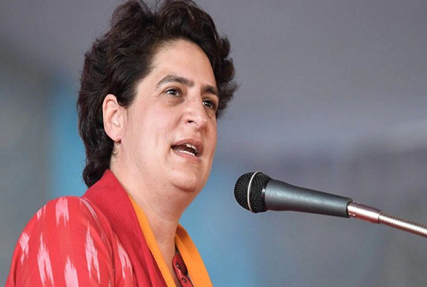

CURRENT-AFFAIRS JAN 22 2022
INDIA
1. 2 killed in fire at Kamala Building in Mumbai
A fire broke out in the 18th floor of a building in Mumbai's Tardeo area. Two people died in the fire, 15 people are said to be badly injured.
2. Priyanka Vadra, who described herself as the face of UP Congress, overturned the statement, said - Irritated and said
Priyanka Gandhi Vadra has clarified on her statement regarding the CM candidate in UP. He said that the party will decide who will become the face of the CM. I am not saying that I am the face of CM. I said that angrily.
New Delhi: Congress General Secretary Priyanka Gandhi Vadra has clarified on her statement regarding the CM candidate in UP. He said that 'somewhere my party decides who will become the face of CM and it does not decide anywhere. This is the way of the party. I am not saying that I am the face of CM. I said that irritatedly because the same questions are being asked again and again.
'Recruitment legislation will be made in UP'
Congress's Uttar Pradesh in-charge Priyanka Gandhi said, 'Youth was talked to to make the recruitment legislation. It has been called recruitment legislation because the biggest problem in Uttar Pradesh is that of recruitment. Youth are eligible, but they do not get jobs. Big announcements are made, but it is not told how jobs will be provided. Will be done.'Employment will be given to 20 lakh youth'
Priyanka Gandhi announced that if the government is formed, 20 lakh jobs will be given in Uttar Pradesh, out of which 40 percent i.e. eight lakh jobs will be given to women. According to him, there are 12 lakh jobs in the government, which are vacant and the government has money for these and eight lakh jobs will be based on the skills and entrepreneurship of the youth, for which the government will support.
'Form fee for examinations will be waived'
He said that all the vacant posts in police service, Sanskrit teacher, Urdu teacher, Anganwadi, Asha etc. will be filled. To restore the faith lost by the youth in the recruitment process, fees for all examination forms will be waived and bus, train travel will be free.
'Exam calendar will be released'
Referring to the promises made in the 'Youth Manifesto', Priyanka Gandhi said that 'an examination calendar will be issued, in which recruitment advertisement, examination, dates of appointment will be recorded and strict action will be taken for violation of this. There will be social justice supervisors for every recruitment to stop the scam of reservation.
'Congress party will increase education budget'
He announced, 'The Uttar Pradesh government has reduced the budget for education. If our government comes, this budget will be increased and all colleges and universities will be upgraded. Good education is most important for building the future. He said, “New opportunities will be provided for the employment of the youth. A world-class institute will be set up for Mallahs and Nishads, in which they will be trained. The youth of the most backward community will be given a loan at the rate of one percent interest to start their business.
'Vacant posts of teachers will be filled'
Priyanka Gandhi said, 'I am saying again and again that our ideology is different. We will work for progress and public good. We are not involved in the politics of polarisation. The youth manifesto states that 8,000 vacant posts of teachers in higher education and colleges will be filled. 38,000 vacant posts of teachers will be filled in the field of secondary education. In the field of basic education, 1 lakh posts of vacant principals will be filled.
3. How did the Amar Jawan Jyoti burn continuously for 50 years at India Gate? Learn Full History
The Amar Jawan Jyoti, which has been burning at the India Gate in the capital Delhi for the last 50 years, has been merged with the Amar Jawan Jyoti located at the National War Memorial. Today we are going to tell about the history of Amar Jawan Jyoti and National War Memorial.
New Delhi: The Amar Jawan Jyoti, which has been burning at the India Gate in the capital Delhi for the last 50 years, has been merged with the Amar Jawan Jyoti located at the National War Memorial. Politics has started only after this decision of the government. Opposition leaders claimed that this was an insult to the soldiers who laid down their lives fighting for the country. Today we are going to tell you about the history of Amar Jawan Jyoti.
What was Amar Jawan Jyoti?
The Amar Jawan Jyoti below the India Gate in central Delhi was an iconic symbol of the nation's tribute to the soldiers who died for the country in various wars and conflicts since independence. In the Indo-Pakistani War of 1971, 3,843 soldiers of the country were martyred. It was built in the memory of those martyrs in 1972. It was inaugurated on Republic Day 1972 by the then Prime Minister Indira Gandhi, after India defeated Pakistan in December 1971.
Jyoti is running continuously for 50 years
Key elements of the Amar Jawan Jyoti included a black marble plinth, a cenotaph, which served as the tomb of the Unknown Soldier. The plinth contained an inverted L1A1 self-loading rifle with a bayonet, over which was a soldier's battle helmet. There were four urns on the establishment, in which there were four burners. On normal days one of the four burners was lit, but on important days like Republic Day, all four burners were lit. These burners were called the eternal flame, and were never allowed to be extinguished.
Amar Jyoti used to burn like this
The Amar Jyoti had been burning under the India Gate for over 50 years, but it was extinguished on Friday as it was merged with another Amar Jyoti at the National War Memorial. They were kept alive with the help of cylinders of petroleum gas or LPG. One cylinder can keep a burner alive for one and a half days.
It was changed in 2006. Although in a project that cost around Rs 6 lakh, the fuel for the flames was changed from LPG to Piped Natural Gas, or PNG. Jwala, which paid tribute to Indian soldiers through this piped gas, was kept alive forever.
Why was it built at India Gate?
India Gate, earlier known as the Indian War Memorial, was built by the British in 1931. It was built as a memorial to around 90,000 Indian soldiers of the British Indian Army, who had died in many wars and campaigns till then. The names of more than 13,000 martyred soldiers have been mentioned on the memorial. Since it was a memorial to Indian soldiers killed in wars, Amar Jawan Jyoti was established by the government in 1972 under it.
e
4. Mumbai: Massive fire breaks out on 18th floor of building, 7 dead; 15 injured
Massive Fire In Mumbai Building: Many people have come in the grip of fire in Kamala Building. Apart from burning, many people also suffered from suffocation.
Mumbai: A massive fire has broken out in a 20-storey building in Mumbai, Maharashtra. This accident happened in the Tardeo area of Mumbai. A fire broke out on the 18th floor of Kamala Building. This fire is of Level 3 Fire. So far 7 people have been confirmed dead in the accident. At the same time, more than 15 people are said to be injured. Today (Saturday) there was a fire in the building at around 7 am.
7 people died in the accident
Let us inform that 7 people were admitted to Nair Hospital in Mumbai after the accident, out of which 5 have died. At the same time, 2 injured were admitted in Kasturba Hospital, out of which 1 has died. At the same time, 14 people were admitted in Bhatia Hospital, out of which 1 has died.
Fire brigade started rescue operation
Let us inform that after receiving the news of the fire, the fire brigade team immediately reached the spot and started the rescue operation. At present, 13 vehicles of fire brigade are present on the spot. Most of the people trapped in the building have been evacuated safely.
The injured were admitted to the hospital
According to BMC, those injured in the accident have been taken to the hospital. His treatment is going on in the hospital. 5 ambulances are present at the spot.
Mayor of Mumbai reached the spot
Significantly, after receiving the news of the accident, Mumbai Mayor Kishori Pednekar also reached the spot. He took information from the officials present at the spot. After this, Mayor Kishori Pednekar also reached the hospital to know the condition of the injured. He said that most of them have been pulled out of the building.
According to firefighters, it will be known in the next 3 to 6 hours how many people died and how many were injured in the accident. The operation of fire brigade is still going on.
5. Data leaked from here, not from the CoWIN app; Big thing revealed in the investigation
Vaccination Data Leak On Dark Web: The Union Health Ministry has asked for an investigation into the data leak case. The Health Ministry said that the data has not leaked from the CoWIN portal.

New Delhi: Although data leaks on the Dark Web are not new, but when this leak is related to the world's largest vaccination drive going on in India, then the question is bound to arise. Something similar happened on social media where it is being claimed that the data of thousands of people who got the vaccine in India is being leaked from the CoWIN portal and sold on the dark web. In such a situation, Zee Media tried to know the truth of this leak.
When was data leaked on the dark web?
In our investigation, our team first opened the dark web website where this data was leaked. Scrutiny of the website revealed that a user named Hackzies had leaked the data of those who got vaccinated on the dark web on 15 January 2022 at 12.11 pm. The leaked data claimed that the data contains mobile numbers, Aadhar card numbers, PAN card numbers, bank passbook numbers and government identity card numbers of some people who got vaccinated, which people gave at the vaccination center to get the vaccine. Was.
This thing came out in the investigation
When our team scrutinized that leaked data, it came to the fore that this data is of 8 thousand 685 people who got vaccinated in Mahasamund district of Chhattisgarh and in this data of total 229 pages, the signature of Chief Medical and Health Officer of Mahasamund district also is.data leak case
Data sold on the dark web
The title of the data put on the dark web is 'List of beneficiaries uploaded in the CoWIN portal for COVID 19 vaccination' i.e. it is clear from the title itself that this data was collected for uploading on the CoWIN portal that Chhattisgarh It was leaked from the database of the Mahasamund district administration and sold on the dark web. In such a situation, it is clear that the data has not leaked from the CoWIN portal.
world
1. Became a millionaire at the age of 22 by selling selfies, earns like this
Millionaire by selling selfies: Today we are going to tell you about a boy who became a millionaire at the age of 22. This boy earned about 7 crores by selling selfies.
New Delhi: Everyone wants to be rich. People work day and night to become rich. At the same time, many people sit on the basis of luck. Today we are going to tell you about a boy who became a millionaire at the age of 22. This boy earned about 7 crores by selling selfies.
Video project made by the name Gojali Everyday
According to a news published in the English newspaper Independent, the name of a 22-year-old boy is Sultan Gustaf Al Ghozali, who lives in Indonesia. Gustaf currently studies computer science. Gustaf has made a video project named 'Gozali Everyday', he made this video with the thinking that people will find it fun. However, NFT (NFT: Non-Fungible Token) bought this project and pictures of Gojali. NFT digital is a digital thing and is bought and sold using blockchain technology.
selfi
Collected 1000 selfies up to the age of 18
Actually, this boy took 1000 selfies till the age of 18. These pictures were bought by NFT collectors. Gozali sold his selfie for cryptocurrency on the NFT auction site OpenSea. He says that I never thought that anyone would buy his selfie. He told that the price of these selfies was kept at $3.
The family members do not know
Pictures of Gustaf's Gozali Everyday project were bought by a person and promoted on social media, after which more than 400 people bought these photos. With this, Gustak earned crores of rupees. However, his family members do not have any information about this.
2. Drug mafia's gathering used to be decorated in jail, call girls were called; Rape of many prisoners
The infamous drug mafia of Mexico used to organize gatherings in El Chapo jail itself. Despite being behind the bars on the strength of money, he used to fulfill all his hobbies. Call girls were called from outside for him. He had also raped several female prisoners.
Mexico City: How powerful the infamous Mexican drug mafia El Chapo was once, it can be gauged from the fact that all his hobbies were fulfilled even in jail. Many revelations have been made in a new book on Al Chapo, popularly known as the drug lord. It has been told in the book that the mafia was accustomed to having relationships with different girls and the jail also used to fulfill this hobby.
Many prisoners were raped
According to the report of 'Daily Star', all facilities were provided to El Chapo in the prison. He used to take sex enhancing drugs like Viagra in the cell itself. Not only this, he had also raped some female prisoners while in jail. It is told in the book that the drug mafia was a sex addict and once he made a bet with his partner that who can have sex for how long.
used to order food from restaurant
Journalist Annabel Hernandez wrote in her book 'Emma and the Other Narco Women' that El Chapo used to order food from restaurants in his cell. According to the book, during his stay in Mexico's Puente Grande prison, the drug mafia fulfilled all his hobbies. From drugs and sex to delicious food, everything was provided to him. Prostitutes were called for him and when this was not possible, the nurses, sweepers and cooking women working in the prison were sent to him. For this they were also given money.
Woman beaten up for denial
The book narrates an incident when a female prisoner refused to fulfill El Chapo's wish, was brutally killed and later raped by the drug mafia. The real name of El Chapo is Joaquín Archivaldo Guzmán Loera. He was jailed in 1993 for the murder of a Catholic bishop, but escaped a few years later. Later he was caught again and now he is serving a life sentence in the High Security Prison of America, Colorado.
3. Such a temple in the world, which is believed to be 'the door of hell'; Death happens as soon as you pass
Today we are going to tell you about a temple which is considered to be the door of Hell. If a person goes to this temple, then his body is not even known.

New Delhi: There are many such places in the world, about which strange claims are made. One such place is in the ancient city of Heerapolis in Turkey. There is an ancient temple here, which is claimed to be the door of Hell. It is said about this place that if a person goes to this temple, then his corpse is not even known.
Death occurs as soon as you enter the temple
Let us tell you that it is called the door of Hell because for the last many years, mysterious deaths are taking place here. The most mysterious thing is that if anyone comes in contact with the temple, then any creature dies. About this temple, people believe that all human beings are dying due to the poisonous breath of the Greek god. In the Greek-Roman period, a law was made that if any person went to this temple, then his head would be beheaded.
People consider it as the gate of hell
कहा जाता है कि इस मंदिर के संपर्क में आते ही इंसान से लेकर पशु-पक्षी तक मर जाते हैं. यहां लगातार हो रही मौतों की वजह से लोग इस मंदिर के दरवाजे को 'नर्क का द्वार' कहते हैं. आपको बता दें कि ग्रीक, रोमन काल में भी लोग मौत के डर की वजह से यहां जाने से डरते थे.
4. Good news for those who want to study in America, Biden made a big announcement
US President Joe Biden has announced to make some policy changes for foreign students. This move of the administration can be seen as a new initiative to connect students with American businesses.
WASHINGTON: The Biden administration in the US has made policy changes to attract international students seeking specialization in science, technology, engineering and mathematics. Announcement has been made on Friday.
Statement of Administrative Officers
According to senior administrative officials, the State Department will allow eligible students coming from areas to complete 36 months of academic training known as STEM. . This will also be a new initiative to connect these students with American businesses.
5. IS's terrible attack in Iraq, so many soldiers were killed
The Islamic State (IS) terrorist group attacked an army post near the provincial capital of Diyala, Bakuba, killing 11 Iraqi soldiers. Iraqi security forces are on high alert after the attack.
Baghdad: At least 11 Iraqi soldiers were killed in an overnight attack by the Islamic State terrorist group in the eastern province of Diyala. The police gave this information on Friday.
attack on an army post
A senior police official told Xinhua news agency that the attack happened after midnight when IS terrorists attacked an army post in the Udim area, about 60 km north of Diyala's provincial capital Bakuba.
soldiers shocked by attack
Al-Saadi said the attackers killed 11 soldiers, including an officer, before fleeing the scene. He confirmed that the attack took the soldiers by surprise as the attackers took advantage of the large drop in temperature and attacked the military post.
Iraqi security forces on high alert
Al-Saadi said Iraqi security forces in Diyala province were on high alert following the attack, while a high-ranking security officer from the Provincial Operations Command reported the incident. Arrived at the spot for investigation.
BUSINESS
1. Good news is coming about pension! Now you will get 'guaranteed return' under NPS, know government's plan
NPS Assured Return Scheme: PFRDA has started the appointment of consultants to make this scheme a reality. These consultants will prepare the design of this scheme.
New Delhi: NPS Assured Return Scheme: A very wonderful scheme is coming for lakhs of pensioners of the country. Pension regulator PFRDA is about to come up with the Minimum Assured Return Scheme (MARS) under the National Pension System (NPS). Let's know the special scheme of the government.
PFRDA to appoint consultant
The Pension Fund Regulatory and Development Authority (PFRDA) has issued a Request for Proposal (RFP) to the consultants to design this scheme. Remind you that last year, PFRDA President Supratim Das Bandyopadhyay had said about this scheme that 'talks are going on with pension funds and actuarial firms about this.
इस बातचीत के आधार पर योजना की रूपरेखा तैयार की जाएगी. PFRDA कानून के तहत एक न्यूनतम सुनिश्चित रिटर्न की योजना शुरू करने की अनुमति है. पेंशन फंड योजनाओं के तहत मैनेज किए जा रहे फंड को मार्क-टू-मार्केट (Marked-to-Market) किया जाता है. जाहिर है, इसमें कुछ उतार-चढ़ाव होते रहते हैं. इनका मूल्यांकन बाजार की स्थिति को देखकर होता है.'
2. 7th Pay Commission: 2 lakh rupees will be credited in the account of central employees! Update on 18 months DA arrears
7th Pay Commission: Central employees are going to get good news once again. Discussion on 18 months DA arrears with cabinet secretary can happen soon. Along with this, Rs 2 lakh can be credited in the account of the employees.
New Delhi: There may be relief news for the central employees. There is happiness among the employees due to increase in dearness allowance, but still they are disappointed on one front. The expectations regarding the 18 months arrears of the employees have not been fulfilled so far. But it is expected that this issue can be discussed this month. Let us know how much money will come in the account of employees after getting approval on DA arrears of 18 months.
good news for central employees
It is worth noting that under the 7th Pay Commission, the central government has given many big benefits to the central employees in addition to 31 percent DA. But the DA arrears case is pending for 18 months. According to Shiv Gopal Mishra, Secretary (Staff Side) of the National Council of Joint Consultative Machinery (JCM), the council has put forth a demand in front of the government that while restoring the DA, one time settlement of DA arrears pending for 18 months should also be done.
The arrears were discussed between the National Council of JCM, Department of Personnel and Training (DoPT) and the Finance Minister. However, no concrete answer was received. The employees are still adamant on the demand and talks are on with the government. However, it is expected that soon this can be discussed with the Cabinet Secretary. According to the annual report of the Department of Expenditure, there are a total of 48 lakh central employees in the country and about 60 lakh pensioners.
will get more than 2 lakh arrears
According to Shiv Gopal Mishra of the National Council of JCM, the DA arrears of Level-1 employees range from Rs 11,880 to Rs 37,554. Whereas, for Level-13 (7th CPC basic pay scale Rs 1,23,100 to Rs 2,15,900) or Level-14 (pay scale), the DA arrears in the hands of an employee will be Rs 1,44,200. 2,18,200 will be paid.
Actually, the dearness allowance of Level 1 employees ranges from Rs 11,880 to Rs 37,554. At the same time, the basic pay of Level 13 employees ranges between Rs 1,23,100 to Rs 2,15,900. At the same time, Rs 1,44,200 to Rs 2,18,200 can be credited in their account as arrears of dearness allowance of Level 14 employees.
3. Gold-Silver Price Today: Silver has crossed 65 thousand, know what was the price of gold today
On Friday, a mixed trend was seen in the bullion market in the Indian bullion market for the last two days. There was a slight fall in the price of gold at 5 pm on Friday, while silver saw a rise. On Friday, the price of 24 carat gold fell by Rs 12 to reach the level of Rs 48608.
New Delhi: On Friday, a mixed trend was seen in the bullion market in the Indian bullion market for the last two days. There was a slight fall in the price of gold at 5 pm on Friday, while silver saw a rise. On Friday, the price of 24 carat gold fell by Rs 12 to reach the level of Rs 48608. At the same time, silver has crossed Rs 65 thousand per kg.
When gold had reached below 48 thousand
Let us tell you that the prices of gold and silver are issued twice a day. There was a rise in the price of gold on Friday afternoon, while in the evening it closed with a red mark. Three days ago, gold rates had reached below Rs 48 thousand.
Silver crossed 65 thousand
On Friday, gold of 995 purity reached Rs 48413 and gold of 916 purity reached Rs 44525. The price of gold of 750 purity is Rs 36456. Gold of 585 purity fell to 28528. Similarly, the price of silver also saw a rise on Thursday and it reached Rs 65,202 per kg.
4. Stock market ruckus, yet it rained heavily in these 5 stocks
Stock Market: The continuous decline in the Indian stock market has been going on for four days. On the last day of the trading week i.e. on Friday, the Sensex fell by 427 points to 59037 points and the Nifty fell 139.80 points to the level of 17617.
New Delhi: Stock Market: The Indian stock market continues to decline for four consecutive days. On the last day of the trading week i.e. on Friday, the Sensex fell by 427 points to 59037 points and the Nifty fell 139.80 points to the level of 17617. During this, many stocks gave losses to the investors, while some gave bumper returns even in these circumstances. Let us know about the stocks giving great returns even in this environment.
These shares earned
Here we will tell you about the stocks that registered the fastest growth (in percentage) in Friday's trading session. The stock of National Fittings opened at Rs 58.70 in the morning and later closed at Rs 70.40 with a gain of 19.93 per cent. Similarly, the share of Baba Arts also closed at Rs 24.10 with a jump of about 20 percent.
5. After PNB, Bank of Baroda brought 'scheme' of cheap houses, know how you can buy?
Bank of Baroda Offer: If you are also looking for a cheap house, then Bank of Baroda has come up with a great scheme. Earlier, a similar offer was made by PNB. Actually, Bank of Baroda (BOB) is going to auction some properties.
New Delhi: Bank of Baroda Offer: If you are also looking for a cheap house, then Bank of Baroda has come up with a great scheme. Earlier, a similar offer was made by PNB. Actually, Bank of Baroda (BOB) is going to auction some properties. Let us tell you that such properties are auctioned by the bank, on which their owners did not pay the dues of the bank after taking the loan.
Auction will start from 29th January
This auction process will start from 29th January on behalf of the bank. Information about these properties has been given by IBAPI (Indian Banks Auctions Mortgaged Properties Information). The properties that the bank will auction include residential, commercial, industrial and agricultural properties.